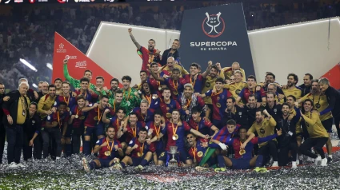
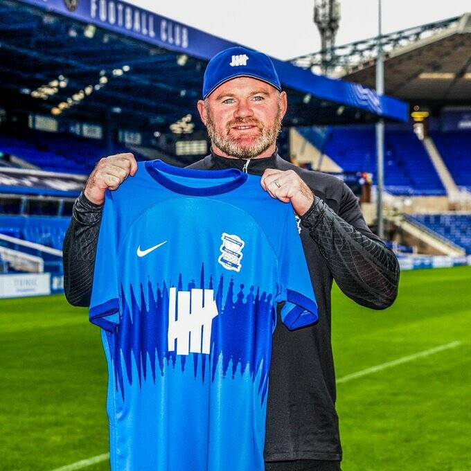
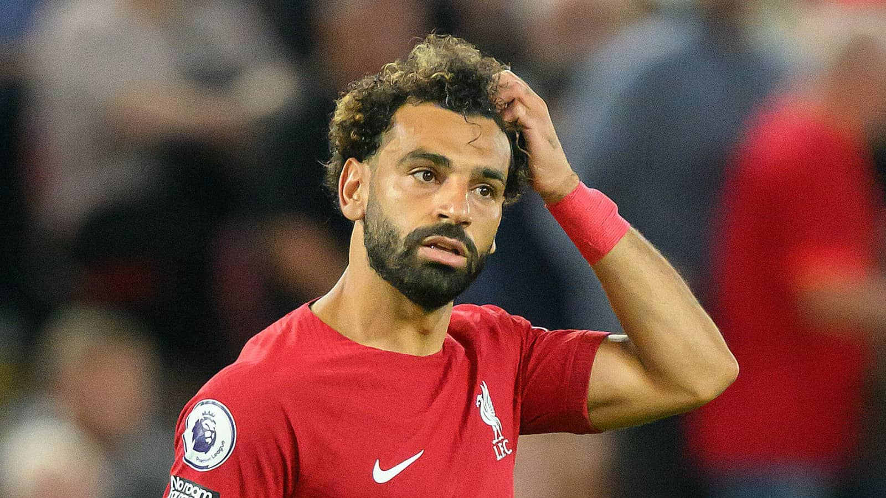
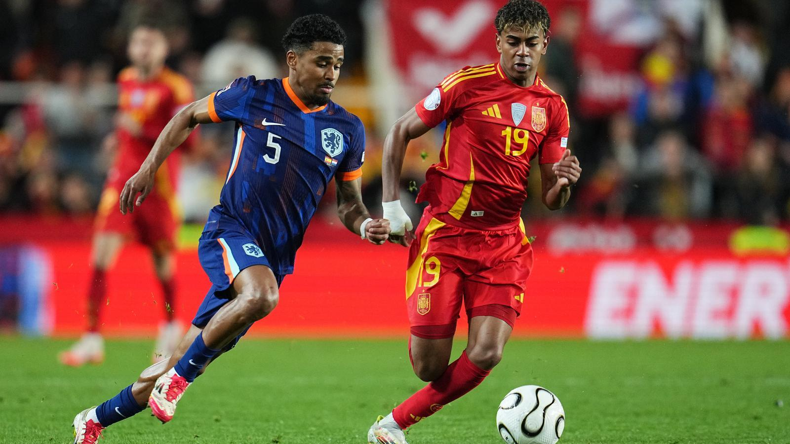

El Barca destruye al Madrid
Gana una supercopa marcada por un partidazo de los de Flick
Conoce al equipo escocés que gano una Copa del Rey
El Motherwell fue el unico participante extranjero, la gano y nunca se le reconocio como vencedor.

La desastrosa racha de Rooney como entrenador
Cambiando de equipo cada poco y siendo mas que desastroso su paso por la Championship

¿Es Salah favorito para el balón de oro?
Con el todopoderoso Liverpool y su gran año, ¿es Salah favorito a ganrlo todo individualmente?

El máximo goleador del año se encuentra en Portugal y es sueco
Viktor Gyokeres, jugador de culto para los expertos, conocelo

Conoce la cuarta equipación del PSG
La bonita camisa presentada por Nike x Jordan del PSG para afrontar los distintos encuentros ligeros

España la gran favorita para el Mundial 2026
El conjunto español tiene todas las papeletas y probabilidades de llevarse el titulo Mundial